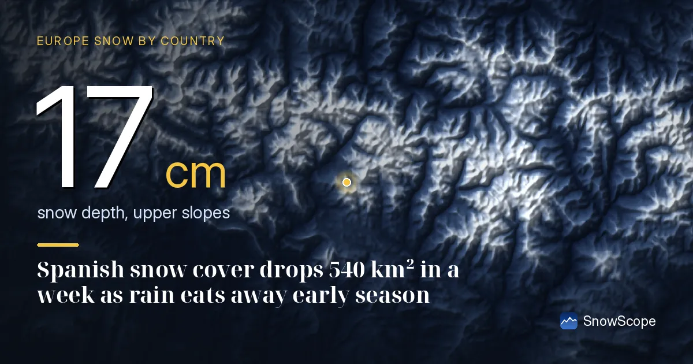

Spanish snow cover drops 540 km² in a week as rain eats away early season
Spanish snow is melting fast. The white area shrank by 540 km² in the past seven days, and only Aramón Cerler and a handful of Pyrenean resorts hold enough snow to ski.
See the live snow forecast for Aramón Cerler in the SnowScope appSnow depth, powder alerts and the 3D map, free.
Snow vanishing across Spain
On 16 November, Spain's snow-covered area measured 310 km², down from 850 km² a week ago. That is a loss of 540 km² in seven days. Yesterday alone we lost 440 km², a sharp drop that tells us rain and mild air have been eating away at the early-season snowpack. The measured data date is 16 November.
Rain at low and middle heights is the culprit. At heights between 500 and 2000 m, there is now zero snow cover. Even above 2000 m, only 4 per cent of the area holds snow. The snow that remains sits only above 2500 m, where SnowScope shows an average depth of 3 cm across just one third of the terrain.
| Resort | Snow depth | New snow, 72 h | Coming, next days | Top |
|---|---|---|---|---|
| Aramón Cerler | 17 cm | 13 cm | 9 cm | 2,618 m |
| Candanchu | 14 cm | 28 cm | 7 cm | 2,238 m |
| Formigal | 11 cm | 24 cm | 6 cm | 2,264 m |
| Boí Taüll | 5 cm | 11 cm | 7 cm | 2,747 m |
| Estació d'Esquí Baqueira-Beret | 3 cm | 5 cm | 6 cm | 2,600 m |

Aramón Cerler leads a thin field
Aramón Cerler tops the Spanish resorts with 17 cm of snow on the ground as of 16 November. Candanchu comes next at 14 cm, followed by Formigal at 11 cm. All three sit in the Spanish Pyrenees, where the heaviest snowfall of the past 72 hours fell: 29 cm in that mountain range, compared to 12 cm in the Cantabrian range and 4 cm in the Sierra Nevada.
Only 6 of Spain's 31 resorts have any skiable snow at all. The rest are bare. These six are all in the northern mountains where altitude and maritime moisture brought more precipitation. At lower elevations in the Sierra Nevada and further south, rock is showing through almost everywhere.
What the next few days will bring
The 7-day forecast shows modest relief but no rescue. The forecast shows a maximum of 4 cm of new snow across Spain in the next seven days, with 19 November the snowiest day at 4 cm. The next three days will see barely 2 cm. Even Aramón Cerler, the depth leader, expects only 9 cm of new snow in the next three days.
The pattern into late November looks slightly better. Between 24 and 30 November, the forecast shows a maximum of 32 cm for some areas of Spain, a substantial shift from the current dryness. That is two weeks away, and much depends on how low the air mass dips and where the storms track.
Height is now the only refuge
Snow exists only above 2500 m. SnowScope shows that between 2000 and 2500 m, just 4 per cent of the terrain holds any white, and depths are unmeasured. Between 1500 and 2000 m, 1500 to 1000 m, and 1000 to 500 m, there is zero snow cover. This is an unusually thin early season, typical of dry autumns in the Atlas and other continental ranges.
Boí Taüll sits at 2747 m at its top, the highest of the tracked resorts, but holds only 5 cm. Estació d'Esquí Baqueira-Beret, also high at 2600 m, has 3 cm. Height alone does not guarantee skiable snow when the season opens so thin.
Neighbours are faring better
France, our western neighbour, has significantly more snow. Les Arcs leads French resorts with 94 cm, and the next seven days are forecast to bring 105 cm of new snow. Andorra sits between Spain and France with 2 per cent white cover, its leader Pal-Arinsal at 5 cm. The contrast is stark: coastal Atlantic systems are loading snow onto the French Alps and the high Pyrenees border, but Spain south of that line is drier.
What to watch for
Early-season snow this thin often does not last. Watch the forecast for 19 November, when the forecast shows the most significant new snow for Spain. If that system tracks further south, Boí Taüll, Aramón Cerler, and Formigal could see another 6 to 9 cm. Without it, the small window for November skiing will close fast.
The second week of late November (24 to 30 November) holds more promise. That is when SnowScope shows 32 cm possible for the driest parts of Spain. By then, if the November pattern holds dry and warm as it has so far, only the highest terrain above 2600 m will have survived. Use SnowScope to track depth and coverage as we move toward that more promising window.
Tips for skiers
- Ski above 2500 m if you are out in the next week. Only heights above that threshold have consistent snow on the ground. Aramón Cerler and Boí Taüll are your best bets, though both are thin.
- Watch 19 November closely. That is the forecast peak for new snow. If your chosen resort receives its forecast share, depths should improve enough to extend the skiable area down another 100 m or so.
- Before you go off-piste, check the official avalanche bulletin for your region. Early-season snow bonding on thin ground can hide weak layers and cause surprise slides.
- Plan for late November (after the 24th) as the more realistic start to the season in Spain.
- Track your chosen resort on SnowScope daily through this window. Depths are changing rapidly, and what looks skiable today may not be tomorrow.
About these numbers
Resort snow depths are the deepest snow on the resort's upper slopes on the date shown; they are estimates for an area, not a measurement at one point. Forecasts can change. Always read the official avalanche bulletin before going off-piste.
Cite this report
For research, teaching or the press: the numbers and charts are free to reuse under CC BY 4.0 with this citation.
SnowScope (2026), Spanish snow cover drops 540 km² in a week as rain eats away early season, https://snowscope.app/blog/en/2026/11/spain-snow-report-16-november-2026.html, accessed 2026-11-16
SnowScope (Atlas Labs). (2026, November 16). Spanish snow cover drops 540 km² in a week as rain eats away early season. SnowScope snow reports. https://snowscope.app/blog/en/2026/11/spain-snow-report-16-november-2026.html
BibTeX
@misc{snowscope2026spainsnowreport16novembe,
author = {{SnowScope (Atlas Labs)}},
title = {Spanish snow cover drops 540 km² in a week as rain eats away early season},
year = {2026},
month = nov,
howpublished = {\url{https://snowscope.app/blog/en/2026/11/spain-snow-report-16-november-2026.html}},
note = {Published 2026-11-16 20:42 UTC; accessed 2026-11-16}
}· CC BY 4.0 · Methods, data and tools →
Aramón Cerler: snow and temperature by height, this winter vs last (tools) →
Follow Aramón Cerler
Free: a message when fresh snow is coming, and the forecast every morning.
More snow reports

Planning a December trip to Baqueira Beret? See our snow history, ticket prices starting at 70,00 € for a 1-day pass, and how it compares to Astún-Candanchú.

Rain falls on thin snow through Saturday as the freezing level stays high; Sunday's shift brings 32 resorts into snow cover and 20 cm forecast at Candanchu.

Thin snow under 10 cm across the Pyrenees on 11 November. Pack sharp edges, waterproof shell, helmet. Best snow on highest north-facing runs.